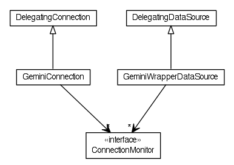

JavaScript is disabled on your browser.
Overview
Package
Class
Use
Tree
Deprecated
Index
Help
Prev Package
Next Package
Frames
No Frames
All Classes
Package org.dayatang.dsmonitor

扩展JDBC数据源和连接，以支持监控功能。 Created by yyang on 14-2-5.
See:
Description
Interface Summary
Interface
Description
ConnectionMonitor
Class Summary
Class
Description
DelegatingConnection
DelegatingDataSource
来自spring
GeminiConnection
GeminiWrapperDataSource
Package org.dayatang.dsmonitor Description
扩展JDBC数据源和连接，以支持监控功能。 Created by yyang on 14-2-5.
Overview
Package
Class
Use
Tree
Deprecated
Index
Help
Prev Package
Next Package
Frames
No Frames
All Classes
Copyright © 2014
Dayatang Open Source.
. All rights reserved.